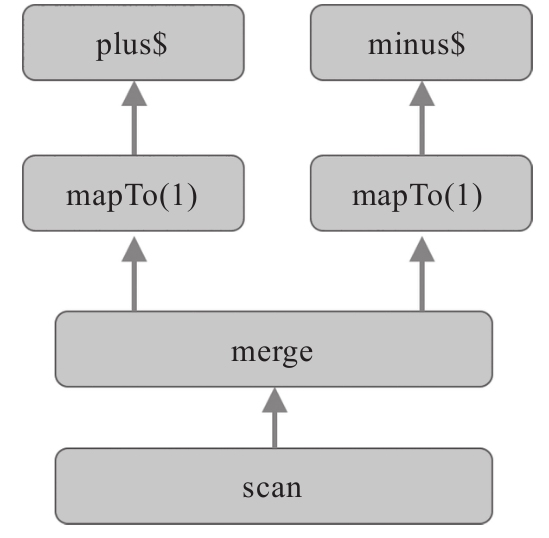

无论是Debugger，还是调试日志，都只是辅助工具。
Debugger并不会自动消灭bug，无论功能多么精妙的Debugger，也需要开发者来操作。
无论多详细的日志记录，无论日志记录包含多少程序运行状态的信息，日志不能直接告诉我们如何去解决bug，还是要靠开发者来发觉调试信息中的蛛丝马迹。
所以，人的因素，永远要比工具重要。
现在业界有人预测未来AI会淘汰掉程序员，因为AI能够自己学会写程序，不过，以目前无论是深度学习还是强化学习的现状，虽然AI能够拼凑出代码，但是AI也不大可能自己学出Debug的技巧，总之，在现阶段，Debug还是要靠人来做。
无论使用Debugger工具，还是添加日志输出语句，在调试中的都不能替代开发者对于程序逻辑的理解，在使用RxJS的程序中，程序的逻辑存在于数据流中，如何理解数据流的逻辑，就是调试代码的关键。
对于简单的问题，也许利用Debugger或者阅读日志就能够发现问题所在，但是对于复杂的问题，用上这两招依然会让你感觉在云里雾里，这时候，最好退一步，不要纠结于代码，而是先从比较高的层次理清数据如何流转。
划出程序的数据流依赖图，就是RxJS中理清数据流转的一种方式。
下面是一个利用RxJS实现计数器的代码：
const plus$ = Rx.Observable.fromEvent(document.querySelector('#plus'), 'click');
const minus$ = Rx.Observable.fromEvent(document.querySelector('#minus'), 'click');
Rx.Observable.merge(plus$.mapTo(1), minus$.mapTo(-1))
.scan((count, delta) => count + delta, 0)
.subscribe(
currentCount => {
document.querySelector('#count').innerHTML = currentCount;
}
);
在上面这个程序中，出现了多个数据流，数据流依赖图就是用可视化的方式画出数据流之间的依赖关系。
在RxJS中，每一个数据流的Observable对象本身是不可变的，用任何操作符产生新的数据流，都不会改变原有的Observable对象，只不过产生一个新的Observable对象。
图12-2展示的就是这个Counter程序的数据流依赖图。

12-2 Counter的数据流依赖图
画出数据流依赖图并不需要专门的工具，利用纸和笔绘制就行，只要能够帮助开发者理解数据流之间的关系，就能够帮助发现程序中问题所在。
上面的Counter程序只是一个示例，真实场景下的数据流完全可能更多，依赖关系也更加复杂。
数据流依赖图展示的是Observable对象之间的数据流转关系，但是却从中无法看到具体数据的处理，而bug的复现往往是一个很具体的场景。
比如，现在有一个bug，复现的情况是当plus按钮被点击两下，minus再被点击三下，预期显示的结果是-1，但是实际显示的结果是0。为了知晓这个bug到底怎么造成的，最好就是了解复现这个bug每一步数据的流转过程，但是，宏观的数据流依赖图无法提供这些细节，这时候，就用得上我们的老朋友“弹珠图”了。